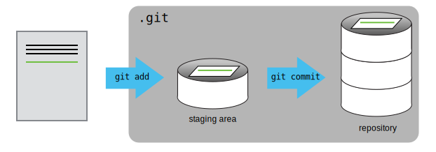
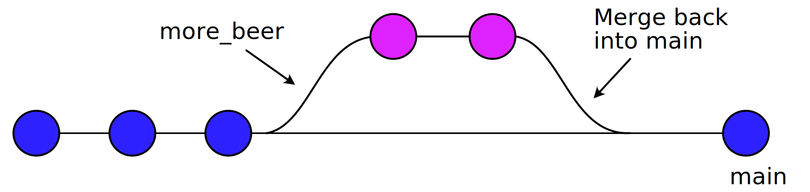

Using git
... it is actually quite clever!
Christian Olsen
https://chrede88.github.io/git-presentation/
December 21st, 2023
Last minute install 😅
About this presentation
- It's written using reveal.js. A HTML presentation framework.
- The arrows in the bottom right shows the possible navigation.
- Use Esc to get an overview of all slides.
- Press s for presentation notes in seperate window.
History of git
- Created by Linus Torvalds in 2005 while he was developing the Linux kernel.
-
The name can be interpreted in different ways:
- Random three letter combination.
- British slang for stupid or despicable.
- "global information tracker" - when things are working well.
- "goddamn idiotic truckload of shit" - when it aren't!
Why use version control?

- Version control is like an unlimited 'undo'.
- Allows many people to work in parallel.
- Easy to compare versions and find old revisions.
Repositories
- A repository holds all your versions.
- Each layer can be easily accessed.
- Each layer in a repository can be identified by the assosiated SHA-1 hash.
Basic Usage
- Add changes incremental and go back at any point.
- Spilt your documents into multiple branches, for better collaboration.
Basic Usage
- Merge multiple versions together without conflicts.
Setting up git
- Download from https://git-scm.com/downloads.
- Or install via your favorite package manager.
% brew install git # macOS
% apt install git # Ubuntu
- Setup user information, so git knowns who is making changes.
% git config --global user.name "JohnDoe"
% git config --global user.email "JohnDoe@unknown.com"
% git config --global core.editor "code --wait"
% git config --global init.defaultBranch main # Github
% git config --global core.autocrlf true # Windows
Setup for other text editors
% git config --global core.editor "atom --wait"
% git config --global core.editor "'c:/program files/Notepad++/notepad++.exe' -multiInst -notabbar -nosession -noPlugin"
% git config --global core.editor "emacs"
% git config --global core.editor "vim"
% git config --global core.editor "gedit --wait --new-window"
% git config --global core.editor "open -W -n" # TextEdit on mac
Using an alternate email
Github allows you to hide your email and will provide you with an alternate email.
Find this setting under "Settings/Emails".
Something like: 0123456+username@users.noreply.github.com
% git config --global user.email "secret@email.com"
Let us check the setup
% git config --global --list
user.name=JohnDoe
user.email=JohnDoe@unknown.com
core.editor=code --wait
Using a secondary remote git service?
% git config user.email "SomeOther@email.com" # for each repo
Let us do some git!
Creating a repository
- Let us first create a folder that will serve as a container for our new repository.
% mkdir beer # create folder
% cd beer # move into folder
% git init # init a repository
- Check that the .git folder was actually created.
% ls -a # list all files/folders
. .. .git
Let us add some content
- Let us create a document called volta_brau.txt.
% code volta_brau.txt
Let us check the status of our repository.
% git status
- git tells us that there are untracked changes. So let us add them to the staging area.
% git add volta_brau.txt # adds one file at a time
% git add . # use . to add all changes
- Check the status again. This time git tells us that it has added our file to the staging area.
Let us commit our changes
% git commit -m "Adding volta_brau.txt"
- Try checking the status once more. This time git tells us that there isn't any new changes.
On branch main
nothing to commit, working tree clean
- Let us review what we have done so far.

Try to add some more content
Add another line in the document and go through the steps to commit the changes to the repository.
% git status # check the status
% git add . # add the changes to the staging area
% git status # check the status again
% git commit -m "Adding another line of text"
Let us look at the logs
- git keeps a nice log for each branch in a repository.
% git log # prints the log
% git log -n 2 # prints the last 2 commit logs
- The log cotains a block for each of our commits.
commit 0123456789abcdef0123456789abcdef01234567
Author: JohnDoe JohnDoe@unknown.com
Date: Thu Jan 1 00:00:00 1970 -0000
Adding volta_brau.txt
Going back to an older commit
- Going back through the repository is easy. We can use the wildcard HEAD.
% git checkout HEAD~1 # going back one step
% git checkout 0123456 # using the SHA1 hash

Moving forward to the latest commit
- We can move forward using HEAD.
- To get out of the detached HEAD state, use one of two options:
% git checkout - # only works for a fully detached HEAD
% git checkout main # always works
Comparing commits
- We can also directly compare the differences between commits, using diff.
% git diff HEAD~1 volta_brau.txt
% git difftool HEAD~1 volta_brau.txt # opens in a diff tool
- git should print both lines in our document, but notice that the second line is green. git tells us that the second line is added compared to previous commit.
Discarding commits
- What if we realize that our last commit was full of spelling mistakes? Can we take it back.
% git revert HEAD # or some older commit
- git will open a file in your prefered editor and ask you to type a commit comment. Close the file when done.
- Open the file and check what happend. Next check the log, there should be a new commit reverting our second commit.
Branches
Branches is mostly used when more than one person is collaborating in a repository. All past commits are carried over when a new branch is created.
Our three past commits along the main branch. And a new branch in magenta.
Let us create a new branch
- We can create a new branch at any point along the tree. We could go back through our tree using checkout and branch off.
- But let's branch off right here.
% git branch more_beer # create new branch
% git checkout more_beer # move to new branch
% git checkout -b more_beer # doing both commands in one go
- Try looking at the log once again, what do you see?
Let us develop on this branch
- Let us add some more text to volta_brau.txt.
- Let us also create a new text file called bbb.txt and add some content to that one.
% code volta_brau.txt # open and add more text
% code bbb.txt # create new file
% git add . # add everyting to the staging area
% git commit -em "Adding new file bbb.txt"
- Notice the extra "e" in the last line. This opens your editor and allows you to futher edit your comment.
Merging the branch
- Now that we have added some more content, let's merge more_beer back into main.
% git checkout main # move back to main
% git merge more_beer
Removing the branch
- Now that we have merged more_beer into main, we don't need that branch anymore.
% git branch -d more_beer # -d only remove if fully merged
Using remote repositories
- It is time to publish our repository on Github. Sooo exciting:)
- First we have to create a repository on Github.
- No need at make a README.md file, we will do that on the commandline.
Make a README file
- Create a new file called README.md. Add lines 2 & 3 to the README file.
% code README.md # Markdown format
% # beer <-- use hashtag for headline
% Some description of the repo
- Commit your README file to the main branch.
% git add .
% git commit -m "Adding a README"
Ready to publish
- We are now ready to publish our repository. Use the second line if you are using a ssh key.
% git remote add origin https://github.com/<username>/beer.git
% git remote add origin git@github.com:<username>/beer.git
% git remote -v # check that it worked
origin https://github.com/<username>/beer.git (fetch)
origin https://github.com/<username>/beer.git (push)
- And now push the main branch to your remote repository.
% git push origin main
Collaborating/Contributing
- The frist rule of git is: Don't push directly to the main branch!
- The second rule of git is: Seriously, don't push directly to the main branch.
- Make a new branch, make sure everyting works and then make a Pull request on Github.
- Let us go through the required steps.
Cloning vs Forking
- Use clone to get a local copy of a remote repository.
- If you are contributing to other peoples projects, you should fork their repository first.
Cloning a repository
- Let us pretent that you want to contribute to my very cool repository "gitr".
- Find it on Github and fork it, so you have your own copy. My username is chrede88.
- Once you have forked it, clone it so you can work on it locally.
% git clone https://github.com/<username>/gitr.git
% git clone git@github.com:<username>/gitr.git
Contribute to my repository
- Make a new branch, make some changes etc. & commit to the new branch.
- Push the chages to your remote repository. The push command will create a new branch in the remote repository automatically.
Full command tree
In case you forgot 😉
% git checkout -b <newbranch> # make new branch
# make your changes
% git add . # add to staging area
% git commit -m "Made some changes" # commit to local repo
% git push origin <newbranch> # push to remote repo
The last step
- Now your changes are incorporated into your version of gitr on Github.
- Make a pull request (from your repo) to the main branch of my repository.
- You have now successfully contributed to a project üòÅ
Pull Request on Github
- Make a pull request from your branch to my main branch.
Comments on contributing
It's a good idea to add a second "git remote" when contributing to other peoples repositories. Add a remote called upstream to the original repository. This way you can easily pull recent changes to your own repository.
% git remote add upstream https://github.com/<original-user>/somerepo.git
% git pull upstream main # pull upstream changes to original repo
Conflicts
- Conflicts can happen if two people are trying to add changes to the same line.
- git will refuse to overwrite anything and open your editor so you can fix the conflict.
An Example
Here is some text about Mars.
Mars is red.
<<<<<<< HEAD
I think Elon Musk will land there.
=======
Elon Musk will never land there.
>>>>>>> dabb4c8c450e8475aee9b14b4383acc99f42af1d
- Pick the "correct" line and delete the rest. Save the document and try again.
Here is some text about Mars.
Mars is red.
Elon Musk will never land there.